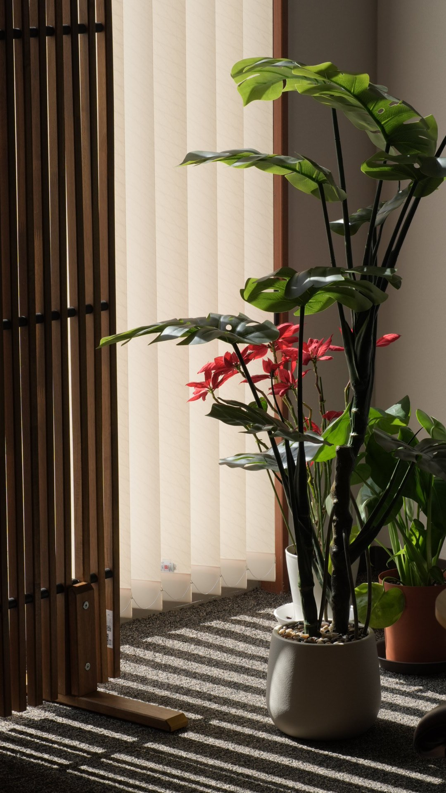

1
頭と目をゆるめる
考え続けて疲れた頭、スマートフォンやデスクワークでこわばった目元を、休息モードへ切り替えます。
CoconeRu. 横須賀中央本店は、眠りと回復の土台を整えるドライヘッドスパです。
Concept
頭の中の雑音は、森が吸い込んでくれる。木の葉のようにひとつずつ落ちていき、目が覚めたときに「不思議と身体を動かしたくなる」と感じられる場所を目指しています。

Services
考え続けて疲れた頭、スマートフォンやデスクワークでこわばった目元を、休息モードへ切り替えます。
首肩まわりの緊張をほどき、浅くなりがちな呼吸に余白をつくります。
手元、顔まわり、背中までやさしく整え、全身で休める感覚を取り戻します。
With Move
CoconeRu. Moveでは、整体とピラティスで疲れにくい身体づくりをサポートします。ヘッドスパでゆるんだ身体を、日常で使える状態へつなげます。
頭・目・首肩の緊張をほどき、呼吸しやすい状態へ整えます。
姿勢や可動域を確認し、疲れやすさにつながる身体の癖に向き合います。
正しい動作感覚を身につけ、休息で整えた状態を日常に戻しやすくします。
Next Step
頭・目・首肩の緊張をほどき、深く休める状態へ整えます。睡眠や回復の質を見直したい方は、CoconeRu. 横須賀中央本店へご相談ください。ご質問や事前相談は公式LINEでも承っています。